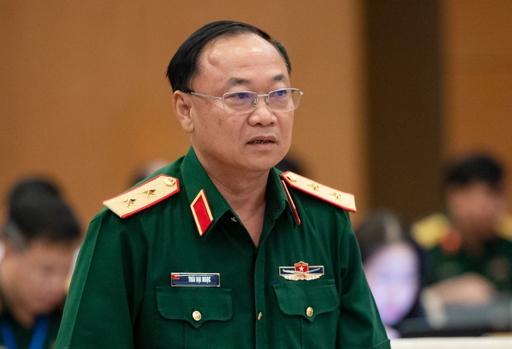

Tại dự luật sửa Luật Sĩ quan Quân đội nhân dân Việt Nam đề xuất bỏ các chức danh chỉ huy trưởng, chính ủy bộ chỉ huy bộ đội biên phòng cấp tỉnh, chỉ huy trưởng ban chỉ huy quân sự cấp huyện.
Sáng 5-6, Ủy ban Thường vụ Quốc hội cho ý kiến về dự án luật sửa đổi, bổ sung một số điều của các luật trong lĩnh vực quốc phòng, an ninh. Cụ thể, 11 luật gồm luật sửa đổi, bổ sung một số điều của Luật Quốc phòng; Luật Sĩ quan Quân đội nhân dân Việt Nam; Luật Quân nhân chuyên nghiệp, công nhân và viên chức quốc phòng; Luật Nghĩa vụ quân sự.
Luật Biên phòng Việt Nam; Luật Phòng không nhân dân; Luật Lực lượng dự bị động viên; Luật Phòng thủ dân sự; Luật Quản lý, bảo vệ công trình quốc phòng và khu quân sự; Luật Dân quân tự vệ; Luật Giáo dục quốc phòng và an ninh. Đề xuất bỏ nhiều chức danh ở bộ đội biên phòng, ban chỉ huy quân sự huyện để tinh gọn Trung tướng Thái Đại Ngọc, phó tổng tham mưu trưởng Quân đội nhân dân Việt Nam, đã trình bày tờ trình của Chính phủ. Theo đó, Hiến pháp năm 2013, Luật Tổ chức chính quyền địa phương đang được Quốc hội sửa đổi, bổ sung. Tổ chức quân đội đã sắp xếp theo hướng tinh gọn, hiệu quả, hiệu lực bảo đảm phù hợp với chính quyền địa phương 2 cấp. Việc sáp nhập một số ban, bộ, ngành trung ương đã thay đổi về tên gọi và trách nhiệm trong việc thực hiện các luật về quân sự, quốc phòng. Về Luật Quốc phòng, Chính phủ đề xuất sửa đổi nhằm xác định xây dựng phòng thủ khu vực, xây dựng cấp xã làm nền tảng để bảo vệ địa phương.